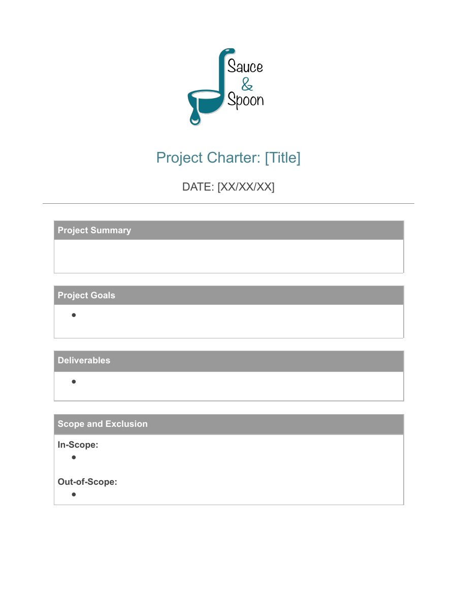

Charte de projet
Project Charter
À quoi il sertWhat it is for Fixer l'objectif SMART, le périmètre, les livrables, le budget et l'équipe.Set the SMART goal, scope, deliverables, budget and team.
Quand je l'utiliseWhen I use it Au tout début, avant toute planification.At the very start, before any planning.